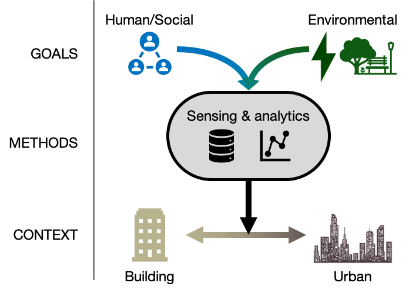

RESEARCH
My research is about the complex relationships between human systems, environmental systems, and built systems. Spanning data science, building engineering/design, and social science, my work seeks to characterize patterns of behavior and the resulting design implications for buildings and urban spaces. My goal is to develop tools that integrate our social and environmental goals in the built environment.



Selected Journal Publications
- Andrew Sonta, Thomas R. Dougherty, and Rishee K. Jain. Data-driven optimization of building layouts for energy efficiency. Energy and Buildings, 238:110815, 2021. [PDF]
- Andrew Sonta and Rishee K. Jain. Learning socio-organizational network structure in buildings with ambient sensing data. Data-Centric Engineering, 1:e9, 2020. [Github] [PDF]
- Andrew Sonta and Rishee K. Jain. Building relationships: Using embedded plug load sensors for occupant network inference. IEEE Embedded Systems Letters, 12(2), 2019. [PDF]
- Andrew Sonta, Perry E. Simmons, and Rishee K. Jain. Understanding building occupant activities at scale: An integrated knowledge-based and data-driven approach. Advanced Engineering Informatics, 37, 2018. [GitHub] [PDF]
- Andrew Sonta, Rishee K. Jain, Rimas Gulbinas, José M. F. Moura, and John E. Taylor. OESPG: Computational Framework for Multidimensional Analysis of Occupant Energy Use Data in Commercial Buildings. Journal of Computing in Civil Engineering, 31(4), 2017. [PDF]
Selected Conference Proceedings
- Thomas R. Dougherty, Andrew Sonta, and Rishee K. Jain. Intelligent network topology based post-pandemic reintroduction policies for offices. In Proceedings of the 7th ACM International Conference on Systems for Energy-Efficient Buildings, Cities, and Transportation (Buildsys '20), 2020. Virtual Event, Japan. [PDF]
- Andrew Sonta and Rishee K. Jain. Data-driven building layout optimization for energy efficiency. In Proceedings of the International Conference on Applied Energy, 2019. Vasteras, Sweden. [PDF]
- Andrew Sonta and Rishee K. Jain. Optimizing neighborhood-scale walkability. In Congress on Computing in Civil Engineering, Proceedings, 2019. Atlanta, GA. [PDF]
- Andrew Sonta and Rishee K. Jain. Inferring Occupant Ties: Automated Inference of Occupant Network Structure in Commercial Buildings. In Proceedings of the 5th ACM International Conference on Systems for Built Environments (BuildSys ’18), November 7–8, 2018. Shenzen, China. [PDF]
- Andrew Sonta, Perry E. Simmons, and Rishee K. Jain. Towards automated inference of occupant behavioral dynamics using plug-load energy data. In Congress on Computing in Civil Engineering, Proceedings, June 2017. Seattle, WA. [PDF]